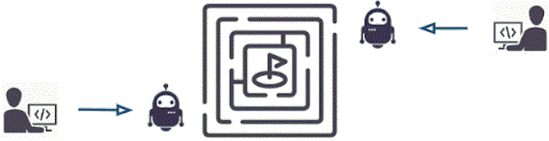

Desplazamiento

Cada jugador comienza en una esquina del tablero, pudiendo desplazarse 1 casillero por turno. Solo se permiten movimientos horizontales o verticales. No es posible moverse hacia casilleros ocupados por murallas ajenas.
Programa tu robot para que resuelva turno a turno el juego y compita contra otros jugadores.
Cada jugador comienza en una esquina del tablero, pudiendo desplazarse 1 casillero por turno. Solo se permiten movimientos horizontales o verticales. No es posible moverse hacia casilleros ocupados por murallas ajenas.

El jugador podrá crear una muralla en su turno, sólo si el casillero está ocupado únicamente por él. Crear una muralla, consume el turno actual, por lo que deberá esperar al próximo turno para poder moverse.

Un jugador puede avanzar sobre el casillero ocupado por otro jugador siempre y cuando no existe una muralla. Esto obliga a ese jugador a abandonar dicho casille y no le permite crear una muralla en el sitio.